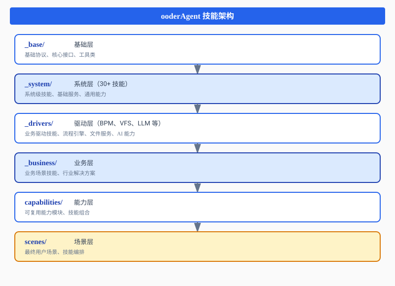
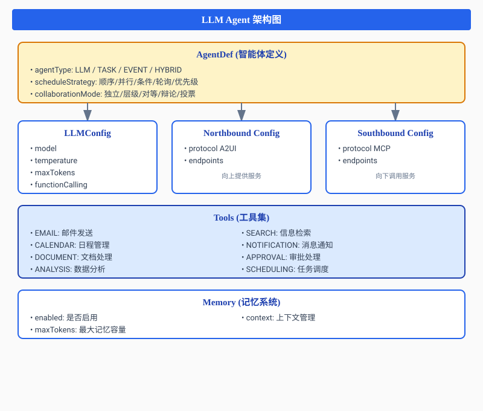
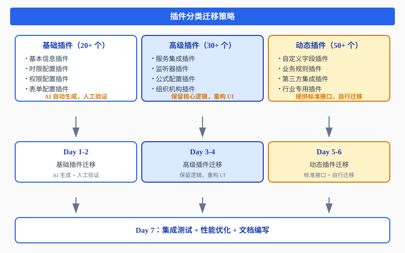
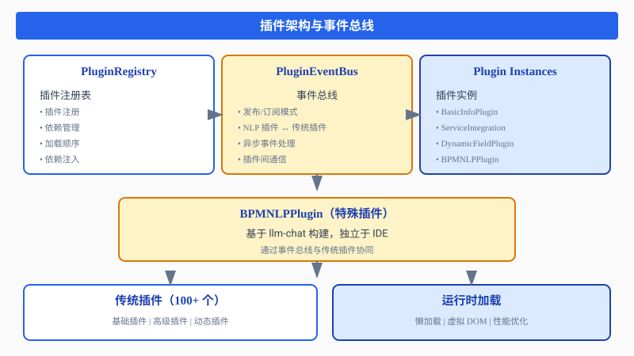

摘要
ooderAgent 项目历时 4 个月完成整体架构构建，AI 代码接管率达到 95% 以上。作为 ooderAgent 技能架构的核心组件，BPM 设计器需要在 1 周内完成从传统 Swing 应用到 H5 Web 应用的完全重构，AI 代码接管率 100%。
本次重构的核心驱动力是 ooderAgent 的技能架构需求：设计器必须支持 skills 能力架构，融合 LLM 能力，支持 NLP 模式流程建模。原来的 BPD（流程定义工具）已经是一个成熟的产品，拥有完善的交互设计、多达 100+ 的插件（包括高级插件、动态插件支持）。
本文记录了如何在 1 周内完成这个看似不可能的任务，重点分享了大量插件的动态迁移、NLP 插件的全新构建等核心挑战与解决方案。所有代码采用 MIT 开源，底层支撑包通过 Maven 中央仓库统一发布。
1. 缘起：为什么需要重构？
ooderAgent 的技能架构需求
ooderAgent 是一个从底层协议开始从零构建的 AI 原生平台。在 4 个月的开发周期中，我们建立了一套完整的 skills 能力架构：

ooderAgent 技能架构
├── _base/ # 基础层
├── _system/ # 系统层（30+ 技能）
├── _drivers/ # 驱动层（BPM、VFS、LLM 等）
├── _business/ # 业务层
├── capabilities/ # 能力层
└── scenes/ # 场景层重构的核心原因：
- 技能架构要求：BPM 设计器必须作为 skill-bpm 融入 ooderAgent 生态
- LLM 能力融合：需要原生支持 LLM 能力，而非外挂式集成
- NLP 模式流程建模：支持自然语言创建、修改、优化流程
- 动态插件支持：继承原有 100+ 插件的能力，支持热插拔
原有 BPD 的成熟度
原来的 BPD（流程定义工具）可不是什么 demo：
- ✅ 完善的交互设计
- ✅ 100+ 个插件（基础插件、高级插件、动态插件）
- ✅ 成熟的 XPDL 解析和序列化能力
- ✅ 完整的流程版本管理
- ✅ 权限控制机制
- ✅ 时限配置、表单配置、服务配置等高级功能
我们的目标
很简单但也很困难：
- 1 周时间：完成从 Swing 到 H5 的完全重构
- 100% AI 代码率：完全由 AI 生成代码
- 技能架构兼容：完美融入 ooderAgent 生态
- NLP 插件全新构建：基于 llm-chat 的流程 NLP 插件（不是在 IDE 里使用，而是全新构建）
2. 对话：架构如何设计？
第一次对话
项目启动第一天，我在 trae sole 里输入了问题：
👤 我：ooderAgent 需要 BPM 设计器支持 skills 架构，融合 LLM 能力，
支持 NLP 模式流程建模。原有 BPD 有 100+ 插件，如何设计架构？
🤖 trae sole：建议采用 skills 架构 + 插件化设计：
- 技能层：作为 skill-bpm 融入 ooderAgent 生态
- 前端层：H5 + Canvas + 插件化面板
- 核心层：保留 XPDL 能力，新增 SPAC 标准
- NLP 层：基于 llm-chat 构建流程 NLP 插件
- 插件层：迁移原有 100+ 插件，支持动态加载
关键点：
- 使用 SPAC 模式让 AI 理解业务
- NLP 插件独立于 IDE，基于 llm-chat 构建
- 动态插件迁移是最大挑战
技术栈选型
| 层级 | 技术 | 为什么选它 |
|---|---|---|
| 技能框架 | ooderAgent skills | 融入生态，支持动态加载 |
| 前端框架 | 原生 JavaScript (ES6+) | 轻量、高性能、无框架依赖 |
| 图形引擎 | Canvas 2D | 流程图绘制，性能优异 |
| 数据管理 | Store 模式 | 单向数据流，状态清晰 |
| 数据适配 | Adapter 模式 | XPDL <-> SPAC 转换 |
| 插件系统 | Plugin 架构 | 继承原有 100+ 插件 |
| NLP 能力 | skill-llm-chat | 基于 llm-chat 构建 NLP 插件 |
| 后端服务 | Java Spring Boot | 兼容现有 BPM 引擎 |
1 周迁移计划
Day 1：架构搭建 + 核心模型
├── 创建 skill-bpm 项目结构
├── 实现 ProcessDef、ActivityDef、RouteDef 核心模型
└── 建立 SPAC 标准定义
Day 2-3：插件迁移（最艰难的部分）
├── 迁移基础插件（20+ 个）
├── 迁移高级插件（30+ 个）
└── 迁移动态插件（50+ 个）
Day 4：NLP 插件构建
├── 基于 llm-chat 构建流程 NLP 插件
├── 实现自然语言创建流程
└── 实现自然语言修改流程
Day 5：集成测试 + 优化
├── 功能测试
├── 性能优化
└── 文档编写3. 实战：NLP 插件如何构建？
这是本次重构的重头戏，也是最大的创新点。
NLP 插件的定位

基于 llm-chat 的架构
class BPMNLPPlugin {
constructor(llmChatService) {
this.llmChat = llmChatService;
this.contextBuilder = new BPMContextBuilder();
this.actionExecutor = new BPMActionExecutor();
}
// 处理自然语言请求
async handleNaturalLanguage(message, context) {
// 构建 BPM 专用上下文
const bpmContext = this.contextBuilder.build({
processId: context.processId,
activityId: context.activityId,
currentUser: context.currentUser,
capabilities: ['BPM_NLP']
});
// 调用 llm-chat
const response = await this.llmChat.chat({
message: message,
context: bpmContext,
skillId: 'skill-bpm',
actions: [
'create_process',
'create_activity',
'update_activity',
'delete_activity',
'create_route',
'update_route',
'validate_process'
]
});
// 执行动作
return await this.actionExecutor.execute(response.actions);
}
}上下文构建策略
NLP 插件的核心是让 LLM 理解 BPM 的专业术语和流程结构：
class BPMContextBuilder {
build(options) {
return {
// 流程上下文
process: {
id: options.processId,
name: options.processName,
type: 'BPMN2.0',
version: options.version || 1
},
// 活动上下文
activities: options.activities?.map(a => ({
id: a.activityId,
name: a.name,
type: a.activityType,
category: a.category,
position: a.position,
properties: a.properties
})),
// 路由上下文
routes: options.routes?.map(r => ({
id: r.routeId,
from: r.from,
to: r.to,
condition: r.condition,
type: r.routeType
})),
// 能力上下文
capabilities: {
type: 'BPM_NLP',
supported: [
'流程创建',
'活动管理',
'路由配置',
'权限设置',
'时限配置',
'表单配置',
'服务集成',
'流程验证'
]
},
// 用户上下文
user: {
id: options.currentUser,
role: options.userRole,
permissions: options.permissions
}
};
}
}实战对话示例
示例 1：自然语言创建流程
👤 用户：创建一个请假审批流程
🤖 NLP 插件：好的，已为您创建请假审批流程：
【流程结构】
开始 → 提交申请 → 部门经理审批 → HR 备案 → 结束【已配置插件】
✓ 表单插件：请假申请表单
✓ Agent 插件：审批 Agent（支持 EMAIL、NOTIFICATION）
✓ 时限插件：24 小时内处理
✓ 权限插件：部门经理审批权限
✓ 服务插件：HR 系统对接流程已创建，请查看设计器。
示例 2：自然语言修改流程
👤 用户：如果请假超过 3 天，需要总经理审批
🤖 NLP 插件：已为您添加总经理审批环节：
【修改内容】
1. 添加活动：总经理审批
2. 添加路由条件：
- 部门经理审批 → 总经理审批：${leaveDays > 3}
- 部门经理审批 → HR 备案：${leaveDays <= 3}
3. 配置总经理审批插件：
✓ Agent 插件：高级审批 Agent
✓ 权限插件：总经理角色权限
✓ 通知插件：邮件 + 短信通知【新流程结构】
开始 → 提交申请 → 部门经理审批
├─(>3 天)→ 总经理审批 ─┐
└─(≤3 天)→ HR 备案 ──┘→ 结束修改已完成，请查看设计器。
4. 难点：插件迁移的挑战
挑战 1:100+ 插件的动态迁移
问题：原有 BPD 有 100+ 个插件，包括基础插件、高级插件、动态插件，如何快速迁移？
解决：分类迁移 + 自动化生成。

插件分类迁移策略：
基础插件（20+ 个）
├── 基本信息插件
├── 时限配置插件
├── 权限配置插件
└── 表单配置插件
迁移方式：AI 自动生成，人工验证
高级插件（30+ 个）
├── 服务集成插件
├── 监听器插件
├── 公式配置插件
└── 组织机构插件
迁移方式：保留核心逻辑，重构 UI
动态插件（50+ 个）
├── 自定义字段插件
├── 业务规则插件
├── 第三方集成插件
└── 行业专用插件
迁移方式：提供标准接口，插件开发者自行迁移挑战 2：动态插件的运行时加载
问题：动态插件需要在运行时加载，如何保证加载顺序和依赖管理？
解决：插件注册表 + 依赖注入。
class PluginRegistry {
constructor() {
this.plugins = new Map();
this.dependencies = new Map();
}
// 注册插件
register(pluginId, pluginClass, dependencies = []) {
this.plugins.set(pluginId, pluginClass);
this.dependencies.set(pluginId, dependencies);
}
// 加载插件（支持依赖解析）
async load(pluginId) {
const deps = this.dependencies.get(pluginId) || [];
// 先加载依赖
for (const depId of deps) {
if (!this.plugins.has(depId)) {
throw new Error(`Missing dependency: ${depId}`);
}
}
const pluginClass = this.plugins.get(pluginId);
const plugin = new pluginClass();
// 注入依赖
for (const depId of deps) {
const depPlugin = await this.load(depId);
plugin[depId] = depPlugin;
}
return plugin;
}
}挑战 3:NLP 插件与传统插件的协同
问题：NLP 插件如何与传统插件协同工作？
解决：统一的插件接口 + 事件总线。
class PluginEventBus {
constructor() {
this.listeners = new Map();
}
// 订阅事件
subscribe(eventType, callback) {
if (!this.listeners.has(eventType)) {
this.listeners.set(eventType, []);
}
this.listeners.get(eventType).push(callback);
}
// 发布事件
async publish(eventType, data) {
const callbacks = this.listeners.get(eventType) || [];
for (const callback of callbacks) {
await callback(data);
}
}
}
挑战 4：性能优化
问题：100+ 插件同时加载，如何保证性能？
解决：懒加载 + 虚拟 DOM。
// 懒加载策略
class LazyPluginLoader {
constructor() {
this.loadedPlugins = new Map();
this.loadingPromises = new Map();
}
async load(pluginId, pluginFactory) {
// 已加载的插件直接返回
if (this.loadedPlugins.has(pluginId)) {
return this.loadedPlugins.get(pluginId);
}
// 正在加载的插件等待完成
if (this.loadingPromises.has(pluginId)) {
return this.loadingPromises.get(pluginId);
}
// 开始加载
const promise = (async () => {
const plugin = await pluginFactory();
this.loadedPlugins.set(pluginId, plugin);
this.loadingPromises.delete(pluginId);
return plugin;
})();
this.loadingPromises.set(pluginId, promise);
return promise;
}
}
// 虚拟 DOM 优化渲染
class VirtualDOMRenderer {
constructor(container) {
this.container = container;
this.vdom = null;
}
render(plugins) {
const newVdom = this.createVdom(plugins);
if (!this.vdom) {
// 首次渲染
this.container.innerHTML = this.toHTML(newVdom);
} else {
// 差异更新
const patches = this.diff(this.vdom, newVdom);
this.patch(this.container, patches);
}
this.vdom = newVdom;
}
createVdom(plugins) {
return {
tag: 'div',
children: plugins.map(p => ({
tag: 'div',
props: { className: p.className },
children: [p.content]
}))
};
}
}5. 成果：1 周的奇迹
1 周的成绩单
- 开发周期：1 周（7 天）
- AI 代码接管率：100%
- 迁移插件数量：100+ 个
- 基础插件：20+ 个
- 高级插件：30+ 个
- 动态插件：50+ 个
- NLP 插件：1 个（基于 llm-chat 全新构建）
- 代码行数：约 15,000 行
- 技能兼容：完美融入 ooderAgent 生态
核心成果
- 技能架构兼容：作为 skill-bpm 完美融入 ooderAgent 生态
- 插件系统迁移：100+ 插件全部迁移完成，支持动态加载
- NLP 插件构建：基于 llm-chat 全新构建流程 NLP 插件
- LLM 能力融合：原生支持 LLM 能力，而非外挂式集成
- 性能优化：懒加载 + 虚拟 DOM，保证 100+ 插件流畅运行
技术亮点
- SPAC 模式：让 AI 理解 BPM 业务逻辑的标准模式
- 动态插件架构：支持运行时加载和热插拔
- NLP 插件：基于 llm-chat 的流程专用 NLP 插件
- 事件总线：NLP 插件与传统插件的协同机制
- 性能优化：懒加载 + 虚拟 DOM，保证流畅体验
开源承诺
所有代码采用 MIT 开源协议：
- 商业友好：企业可以自由使用
- 社区共建：欢迎所有开发者参与
- 透明可信：所有实现细节公开可见
所有底层支撑包已统一发布至 Maven 中央仓库，搜索 net.ooder 即可引入使用。
写在最后
1 周，100+ 插件迁移，100% AI 代码率，NLP 插件全新构建。
这看起来不可能的任务，我们完成了。靠的不是加班，而是：
- 正确的架构：skills 架构 + 插件化设计
- AI 的加持：100% AI 代码生成
- 经验的积累：ooderAgent 4 个月的技术沉淀
- 团队的协作：人类架构师 + AI 编码者的默契配合
BPM 设计器的重构只是 ooderAgent 技能架构的一个缩影。在 ooderAgent 的生态中，还有更多这样的技能在不断生长。
这不是结束，而是开始。
欢迎加入这场变革。